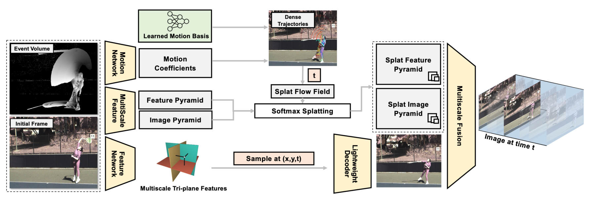
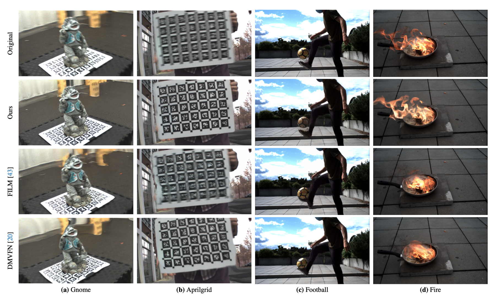
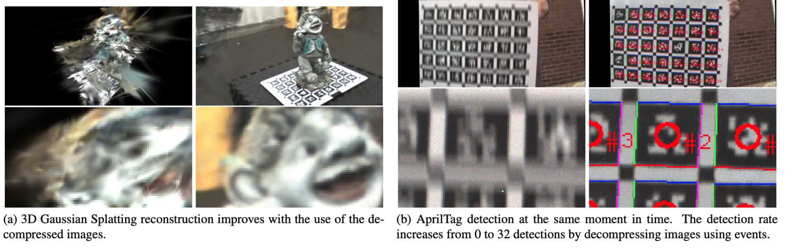

ContinuityCam: Event-based Continuous Color Video Decompression from Single Frames
- Ziyun Wang¹
- Friedhelm Hamann²
- Kenneth Chaney¹
- Wen Jiang¹
- Guillermo Gallego²
- Kostas Daniilidis¹𝄒³
TL;DR: One static color frame plus events becomes a temporally continuous video, queryable at any time between the events.
Abstract
We present ContinuityCam, a novel approach to generate a continuous video from a single static RGB image, using an event camera. Conventional cameras struggle with high-speed motion capture due to bandwidth and dynamic range limitations. Event cameras are ideal sensors to solve this problem because they encode compressed change information at high temporal resolution. In this work, we propose a novel task called event-based continuous color video decompression, pairing single static color frames and events to reconstruct temporally continuous videos.
Our approach combines continuous long-range motion modeling with a feature-plane-based synthesis neural integration model, enabling frame prediction at arbitrary times within the events. Our method does not rely on additional frames except for the initial image, increasing, thus, the robustness to sudden light changes, minimizing the prediction latency, and decreasing the bandwidth requirement.
We introduce a novel single objective beamsplitter setup that acquires aligned images and events and a novel and challenging Event Extreme Decompression Dataset (E2D2) that tests the method in various lighting and motion profiles. We thoroughly evaluate our method through benchmarking reconstruction as well as various downstream tasks. Our approach significantly outperforms the event- and image-based baselines in the proposed task.
How it works
A motion network turns the event volume into dense trajectories via a learned motion basis, which are sampled at a query time t to give a splat flow field. Softmax splatting warps the feature and image pyramids of the initial frame along that field, while a feature network builds multiscale tri-plane features that a lightweight decoder samples at (x, y, t). Multiscale fusion combines both branches into the image at time t.

Qualitative results
Reconstructions on the E2D2 dataset across a range of lighting and motion profiles, compared against event- and image-based baselines.

Downstream tasks
Decompressed frames help downstream perception, not just perceptual quality: 3D Gaussian Splatting reconstructions improve when built from the decompressed images, and AprilTag detection at the same instant in time goes from 0 to 32 detections.

Acknowledgements
We gratefully acknowledge the support of the GRASP
Laboratory at the University of Pennsylvania and the Robotic Interactive Perception group at
TU Berlin.
BibTeX
@inproceedings{wang2025continuitycam,
title={{Event-based Continuous Color Video Decompression from Single Frames}},
author={Wang, Ziyun and Hamann, Friedhelm and Chaney, Kenneth and Jiang, Wen
and Gallego, Guillermo and Daniilidis, Kostas},
booktitle={IEEE/CVF Conference on Computer Vision and Pattern Recognition (CVPR) Workshops},
year={2025}
}